Watch the campaign video
Published on Healthy Trinity's YouTube channel.
Marketing student at Trinity College Dublin, with a background that runs from skincare pop-ups in India to social campaigns on the streets of Dublin.
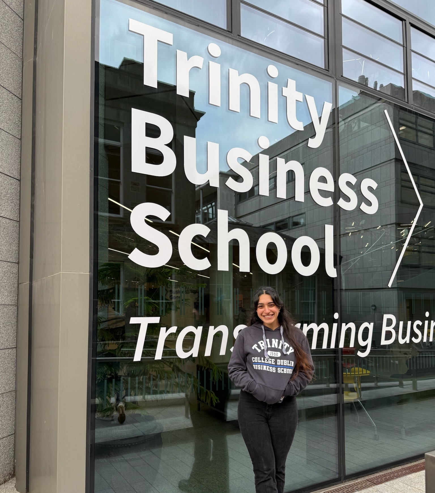
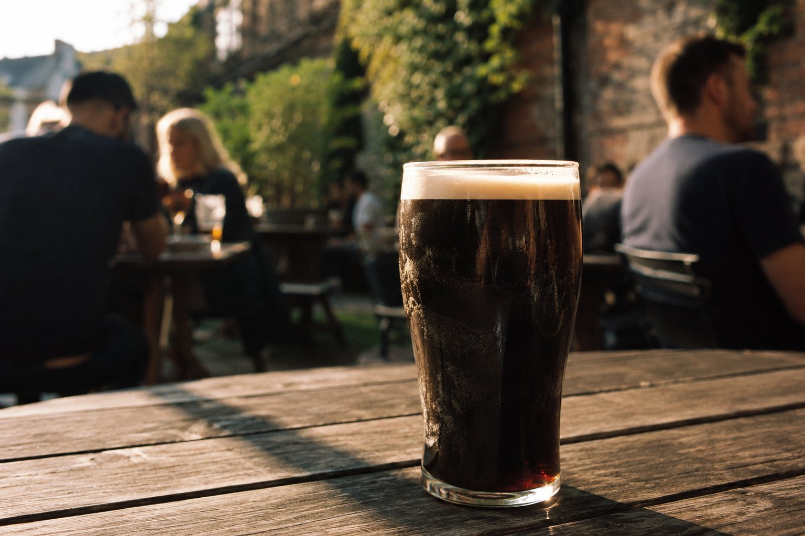
A summer platform built around the rarest thing in Ireland.
Read case study →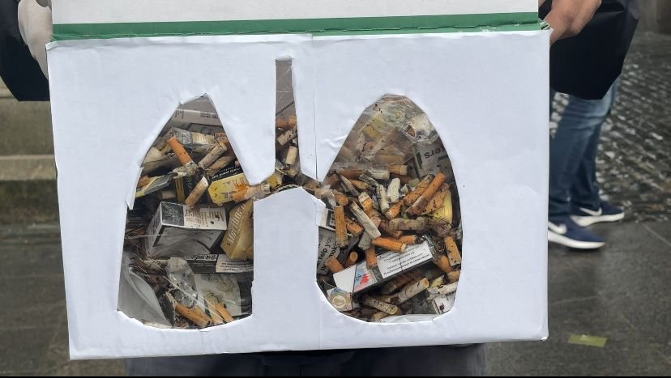
An advocacy campaign that made a known truth impossible to ignore.
Read case study →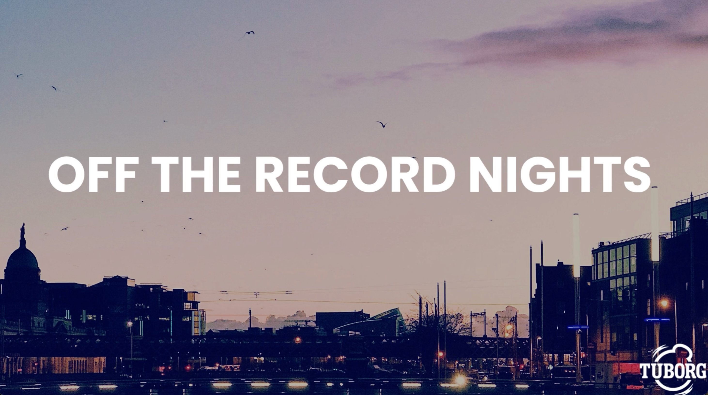
A Tuborg campaign giving Gen Z permission to live offline for a night.
Read case study →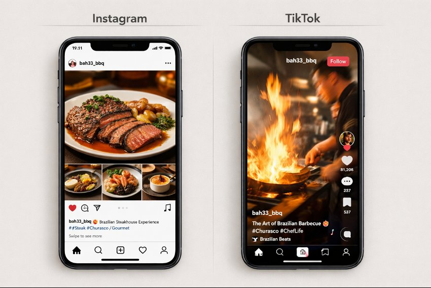
A four-pillar content plan for a Brazilian BBQ restaurant in Dublin.
Read case study →I took my time getting here. Two years at KPMG in risk analysis, a skincare brand internship in India, and now a MSc in Marketing at Trinity. Whether I was tracking client KPIs or building campaign concepts, the same question kept pulling me back: why do people do what they do?
More about me →"A true team player and force multiplier. Sanchi not only delivers exceptional work but also uplifts those around her through collaboration, positivity, and a strong sense of ownership."
"Sanchi has excellent analytical skills and approaches problems with clarity, logic, and attention to detail. What sets her apart is her ability to grasp new concepts quickly and apply them effectively."
"Sanchi consistently impressed me with her professionalism, quick learning, and positive attitude. She brings clarity and creativity to every task she takes on."
I am a Marketing student at Trinity College Dublin, with a background that goes from skincare brand pop-ups in India to social marketing campaigns on the streets of Dublin. I took the long route into marketing, with a stop at KPMG along the way.
But whether I was in risk analysis or building campaign concepts, the thing I kept coming back to was the same: why do people do what they do?
I am obsessed with understanding the deep human truths: the real reason someone stops scrolling, picks one brand over another, or puts out a cigarette mid-drag. That is the insight I chase in everything I make.
Wrote influencer ad scripts for YouTube and Instagram. Helped coordinate the brand's first pop-up event, which generated ₹400,000 in sales over two days. Ran competitor and customer research across three product launches and worked on Amazon and website SEO alignment.
Managed KPI analysis across 80+ client profiles every week. Earned the highest internal accreditation for accuracy. Collaborated with UK-based stakeholders, spotted process inefficiencies, and took the initiative to fix them.
Studying marketing, consumer behaviour, and digital communications. Working on live client projects, campaign concepts, and content strategy. Building the skills and the work that take me into a graduate marketing role in Dublin.
I am at the gym, deep in a playlist nobody asked for, or losing track of time with a paintbrush.
Five case studies. Each one taught me something about how people actually think, feel, and act.
Self-initiated strategic platform.
Read case study →Group project, Marketing & Society, TCD.
Read case study →Group project, Consumer Behaviour, TCD.
Read case study →Group and individual project, Digital Marketing Communications, TCD.
Read case study →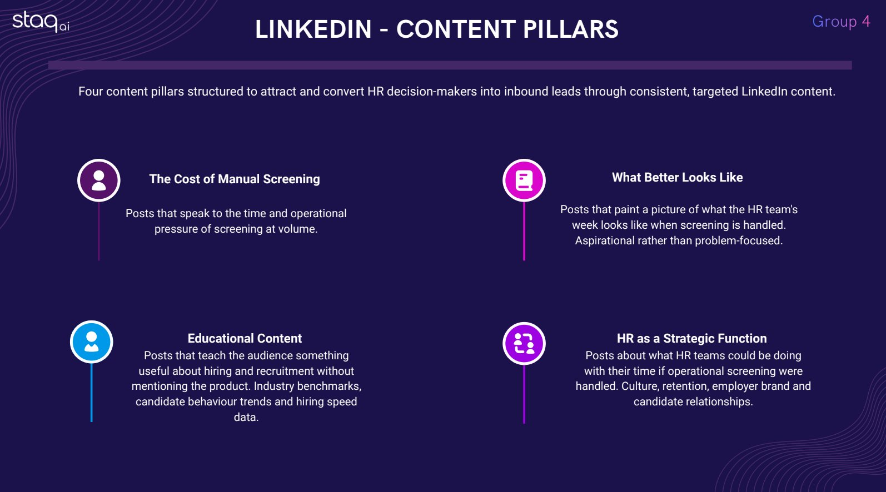
Marketing Design Consultancy, TCD.
Read case study →A group project for the Marketing and Society module at Trinity. The brief was to design an advocacy video on smoking, aimed at EU policymakers, to push for stronger action on tobacco harm.
People know smoking is harmful. The statistics, the warnings on packs, the public health ads, none of it lands the way you would expect. But seeing hundreds of cigarette butts collected together in one place made it impossible to look away. That is the difference between knowing something and feeling it. The campaign was built around that gap.
I developed the core creative idea: building lung-shaped boxes and filling them with cigarette butts collected from the streets around Dublin. The visual was designed to be confronting in a way that data alone never is.
From there, the group turned the concept into a street activation and an advocacy video for EU policymakers. We collected the waste, built the boxes, and took the campaign onto Trinity's campus and across the city.
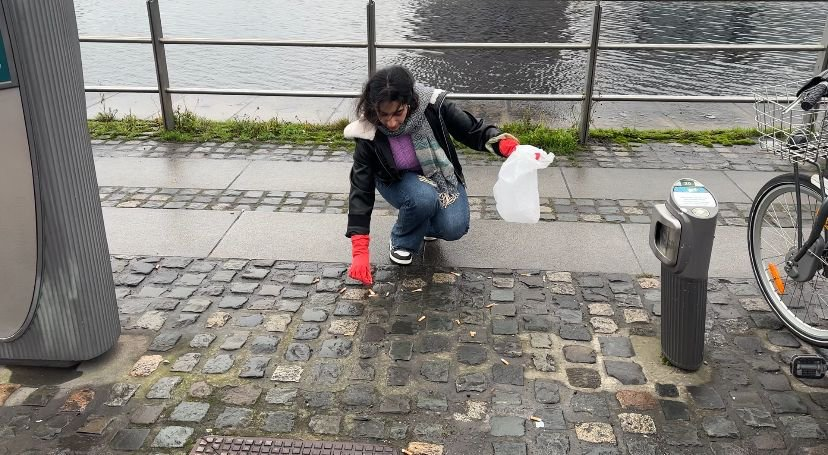
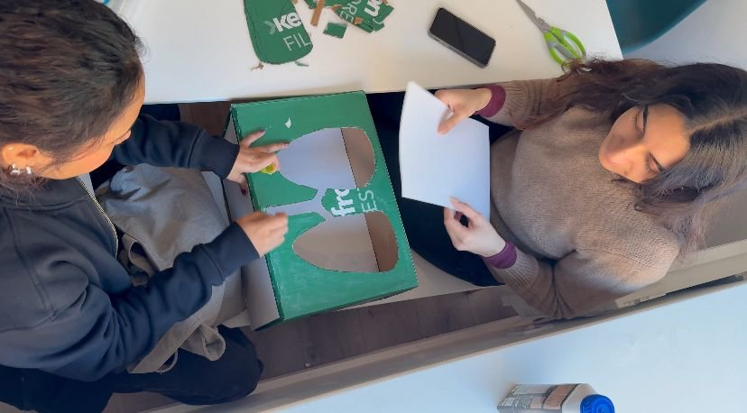
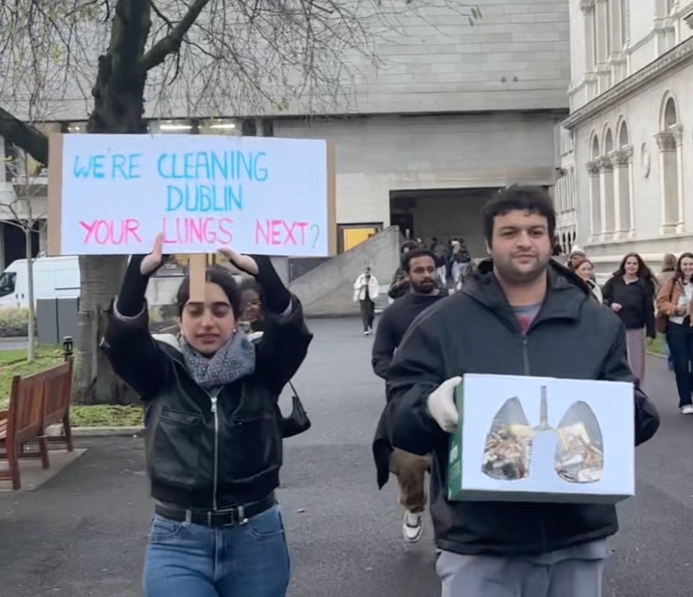
Published on Healthy Trinity's YouTube channel.
Insight is only as strong as how you make people feel it. A statistic about smoking deaths can be ignored. A pair of lungs made of butts cannot. This project shaped how I think about campaign creative now: start with what the audience already knows, then find a way to make them feel it for the first time.
A group project for the Consumer Behaviour module. The brief was to design a brand experience for Tuborg that connected with Gen Z on something they actually cared about.
Gen Z carries the constant weight of being watched. Phones out, stories up, every night documented. The result is that they are rarely present in the moment they are supposedly enjoying. Our group identified this as the tension worth solving: Tuborg could position itself as the brand that gives young people permission to put the phone down.
The group developed the strategic insight together. I took it from concept to execution by creating the full two minute video campaign myself, end to end. The concept was Off The Record Nights: nights that do not need to be posted to be real.
Posted on LinkedIn.
Brand work is most powerful when it gives people permission, not instructions. Telling Gen Z to stop being on their phones would not work. Offering them a night that is theirs alone might. This project taught me how to move from a sharp consumer insight to a piece of creative work that respects the audience instead of lecturing them.
Two linked projects for the Digital Marketing Communications module. The group brief was to build a full digital marketing strategy for BAH33°, a Brazilian barbecue restaurant on Dawson Street in Dublin. The individual brief was to expand on a chosen part of that strategy in depth.
BAH33° is not just another Dublin restaurant. It is a premium Brazilian steakhouse on Dawson Street, which makes it a natural choice for client lunches, team dinners, and corporate hosting. The opportunity was not to compete with casual diners on Instagram trends. It was to position BAH33° as the reliable choice for the people doing the booking when the stakes matter.
In the group project, I owned the content marketing strand of the full strategy. I built the approach around four content pillars designed to move target personas from awareness through to trust and booking intent. I also developed the content calendar that mapped this out across platforms.
For the individual project, I expanded the content marketing work into a deeper plan: post mockups for Instagram and TikTok generated with AI, refined messaging for each pillar, and platform-specific tactics.
The structured rodízio service, continuous table-side flow, and clear pricing reduce perceived risk for those hosting client lunches.
Open-flame grilling, table-side carving, and preparation detail that support premium positioning and reinforce food quality.
A monthly chef-led feature on one premium cut: origin, preparation, and cultural context. Builds confidence in what diners are serving clients.
Content built around business lunch etiquette, timing, and corporate hosting needs.
I used AI-generated visuals to mock up how content from each pillar would land on Instagram and TikTok. This made the strategy concrete rather than abstract, with a visual reference for tone, framing, and format alongside the written plan.
Good content strategy starts with who you are actually trying to win, not where you want to post. Building the four pillars around the corporate hosting audience meant every piece of content had a specific job: reduce risk for the booker, justify the price, build culinary credibility, fit the business lunch context. This project taught me to think about content as a tool for confidence, not just attention.
A live consultancy project with Staq AI, an AI recruitment startup incubated at Dogpatch Labs in Dublin. Our team was brought in to support the founder on brand and marketing. My focus area was LinkedIn: brand toolkit, organic lead generation strategy, and content.
Early stage B2B founders do not buy from polished corporate accounts. They buy from people they trust. For Staq AI, that meant the founder's own LinkedIn presence was a bigger lever than a company page. The strategy had to make her show up as someone worth listening to, not as a product on a page.
I built the LinkedIn brand toolkit so the founder had a consistent visual and verbal identity to post under. I developed the organic lead generation strategy: who to target, what content would earn their attention, and how to convert engagement into conversations. I also created content for the platform that the founder could publish.
To do this well, I completed Hootsuite's Social Media Marketing Professional Certificate during the project, which sharpened my approach to strategy, copywriting, and platform-specific content. I used AI tools to refine the work and make sure the output landed with the right audience in the right tone.
I built the LinkedIn content strategy around four pillars, each designed to move HR decision-makers from passive scroll to inbound conversation.
Posts that speak to the time and operational pressure of screening at volume.
Posts that paint a picture of what the HR team's week looks like when screening is handled. Aspirational rather than problem-focused.
Posts that teach the audience something useful about hiring and recruitment without mentioning the product. Industry benchmarks, candidate behaviour trends, and hiring speed data.
Posts about what HR teams could be doing with their time if operational screening were handled. Culture, retention, employer brand, and candidate relationships.
Four LinkedIn posts I drafted for the founder, each anchored to one of the four pillars. Same brand voice, different jobs.
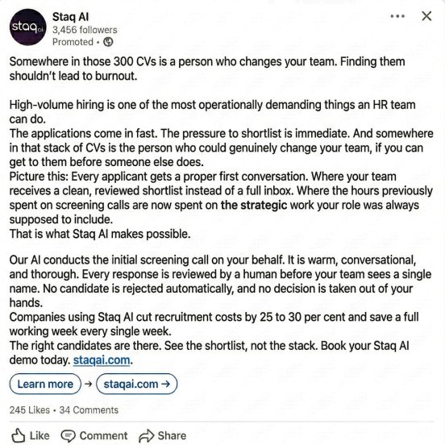
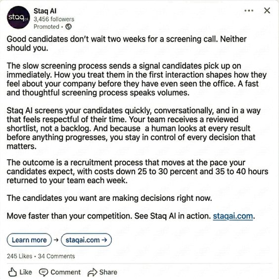
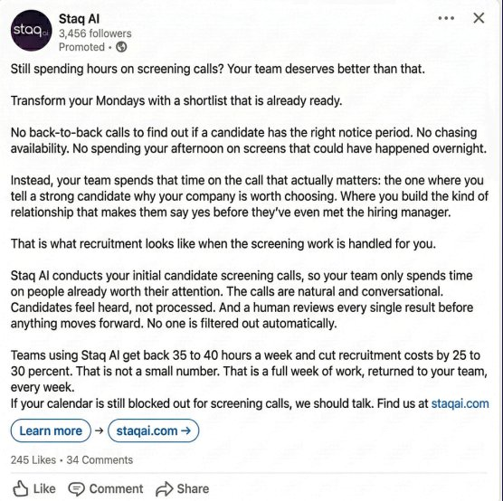
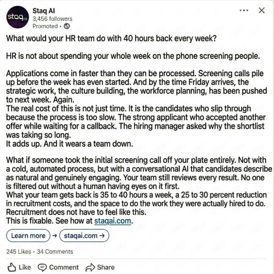
This was a live client, so the work had to be usable, not theoretical. After the project ended, I saw the founder implementing several of the frameworks I had built, which was the strongest signal that the strategy was practical and worth using.
Working with a live client at an early stage startup is different from any classroom brief. The founder did not need a perfect deck. They needed something they could pick up on Monday and use. This project taught me to build for adoption, not for marks.
A self-initiated platform exploring how Guinness could own the Irish summer occasion through reactive, weather-led marketing.
A summer platform built around the rarest thing in Ireland.
Guinness is having a moment. Global sales up 13 percent in the year ending June 2025. Penetration among women up 86 percent. Penetration among under-34s up 70 percent. Among 18 to 25 year olds, the share who think Guinness is a cool brand has gone from 22 percent to 67 percent in two years.
The brand has done the hardest part. It has earned cultural permission with Gen Z and women, the two audiences it had spent a century missing. But the work targeting them still leans heavily on sport, pubs, and winter. The audience has arrived. The occasions have not caught up.
There is a clear white space: a summer platform built for the audience already gravitating toward the brand.
A sunny day in Ireland is not weather. It is a national event. Beer gardens fill within an hour. Plans cancel. Group chats light up. Phones come out. The country gives itself permission to stop.
That is the strategic gold. Most brands chase summer with seasonal campaigns that run for three months whether the sun shows up or not. Guinness has the chance to do the opposite: own the moment, not the season. Show up only when it actually matters.
And the connection writes itself. Guinness has built its brand on a single idea for nearly a century. Good things come to those who wait. In Ireland, the sun is one of them.
Young Irish women, 21 to 28. Urban, social, culturally tuned in. They are the audience driving Guinness's recent surge, but their experience of the brand is still mostly winter, mostly pub, mostly male coded. The platform is built for them. Not as a niche segment, but as the lead audience the rest follows.
Guinness Forecast is a reactive, weather-led platform that activates only when conditions are right. When Dublin hits 20 degrees and sunshine, a Guinness Day is declared. The platform behaves like a forecast. It predicts. It announces. It records.
Each Guinness Day is numbered across the summer, turning a campaign into a logged event. Day 04. Day 07. Day 11. Scarcity does the marketing.
On every Guinness Day, participating Dublin pubs hand out a limited edition collectible coaster with every Guinness ordered. Each coaster is printed with the date, the temperature, the pub name, the Guinness Day number of the year, and a unique pour number for that pub on that day.
These coasters become a record of every good day of Irish summer. People collect them, photograph them, line them up at home, post the keepers. The souvenir is the post.
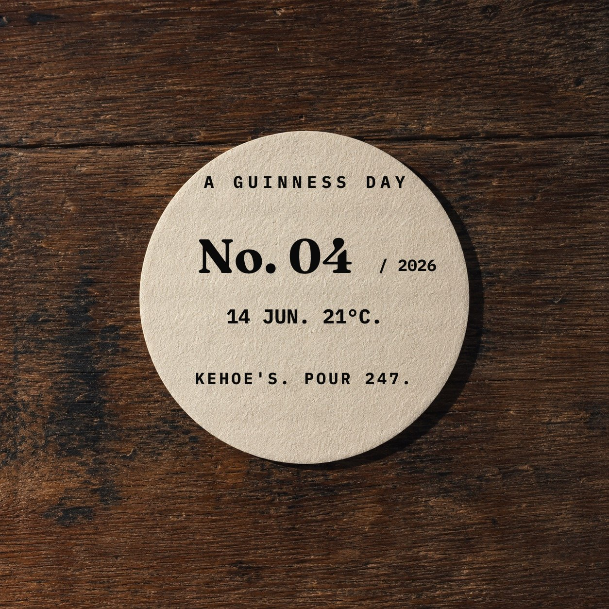
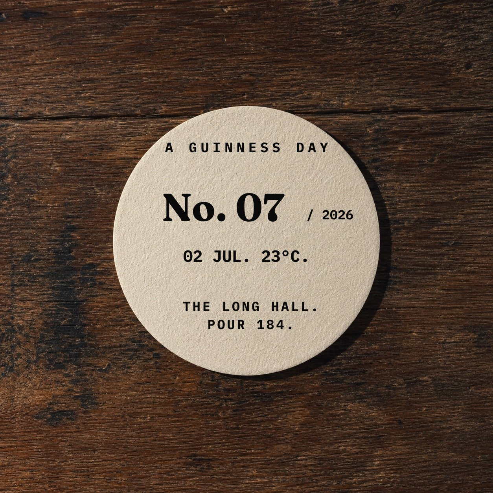
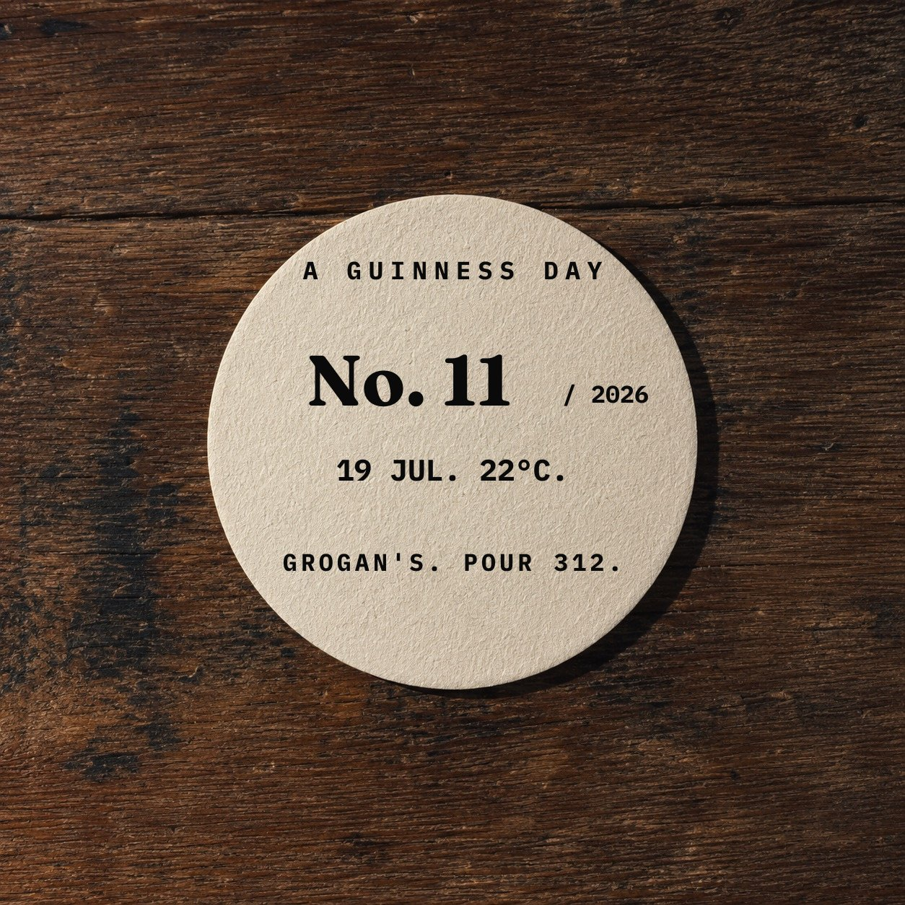
Each participating pub flips a hand-painted wooden sign in the window from "Not today" to "A Guinness Day" the moment conditions are confirmed. A small, satisfying, ownable ritual. The two states make the platform tangible. Pubs become a small treasure trail across the city.
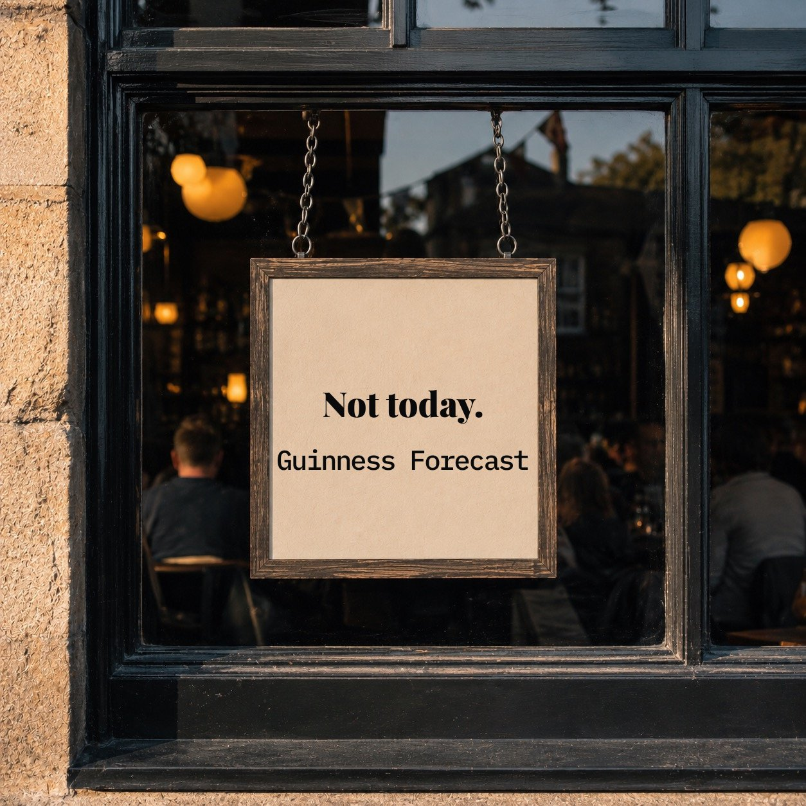
The platform activates and deactivates based on real conditions. On the days the forecast does not deliver, the campaign does not pretend it has.
Digital boards across Dublin behave like forecast screens. They predict. They announce. They log.
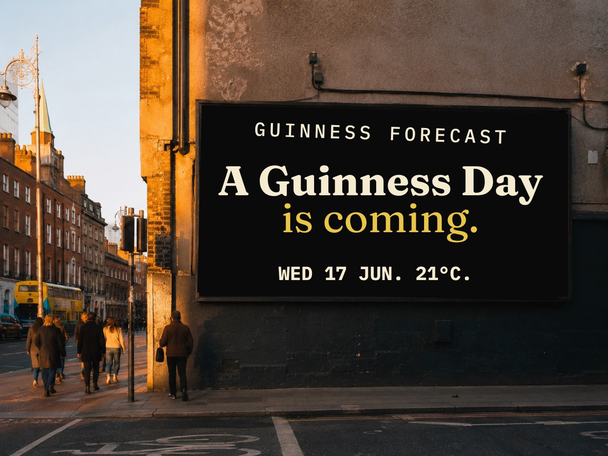
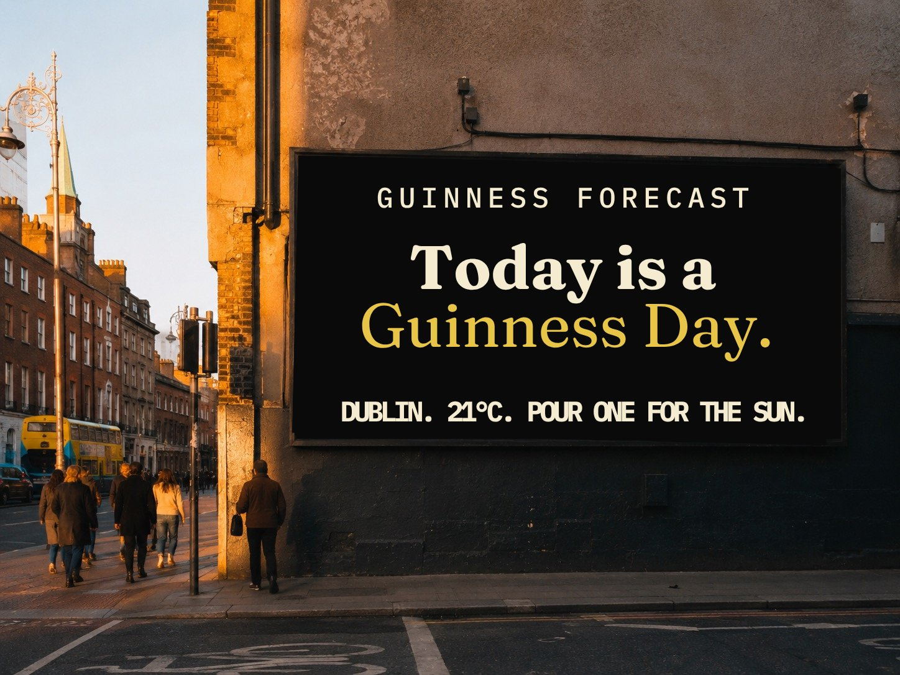
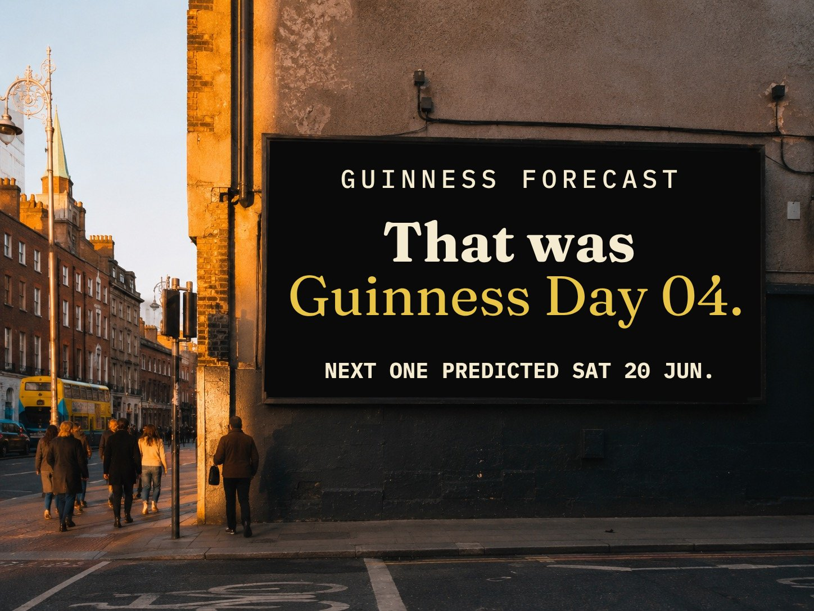
TikTok carries the reactive announcement moments. Instagram carries the keepsake and aesthetic layer.
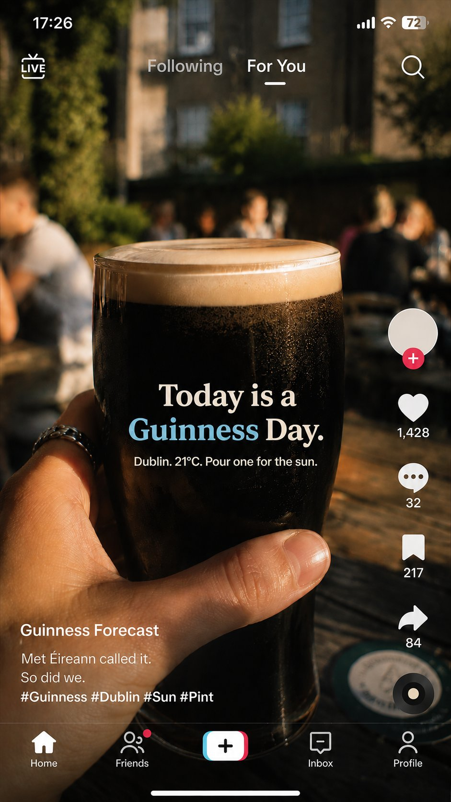
Guinness Forecast runs in partnership with Met Éireann, Ireland's national weather service. Met Éireann's data triggers the platform. When their reading hits 20 degrees and sunshine in Dublin, the campaign activates automatically. Boards flip, pubs receive coasters, social announces.
The partnership gives the platform credibility. This is not Guinness inventing the moment. It is the national authority confirming it. It also unlocks earned media. Weather presenters could naturally reference "tomorrow looks like a Guinness Day" during forecasts.
The visual identity is built around a simple rule: dark surfaces carry colour, light surfaces stay monochrome.
The platform does not invent a story. It surfaces one that has been sitting under Guinness's nose for a century. Sunny days in Ireland are rare and worth marking. Guinness has always been about rare, slow, worth the wait. Two truths, one idea.
It also earns its place commercially:
A self-initiated project by Sanchi Ahuja. Not affiliated with Guinness or Diageo.
If you have a role, a project, or just want to chat about marketing in Dublin, I would love to hear from you.